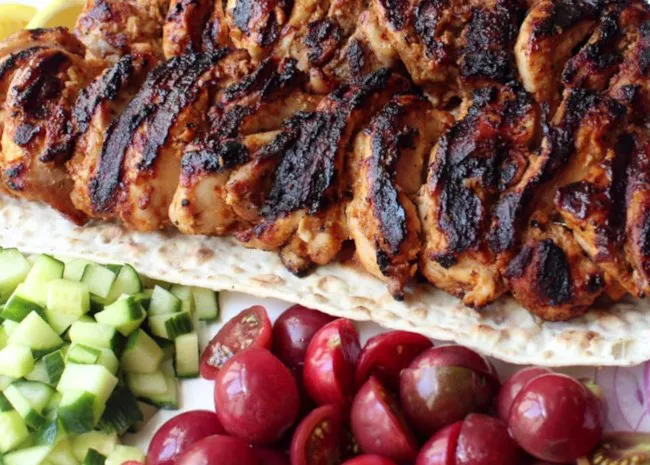

Turkish Chicken Kebabs

A Tasty Turkish Chicken Kebab recipe
This chicken kebab recipe uses a flavorful, yogurt-based marinade.
I'd like to think that all the chicken coming off American grills this summer will be as tasty, juicy, and tender as these.
Even inexperienced grillers can produce impressive results!
I'm not sure how "Turkish" this is — it's loosely based on a lamb marinade I've used for a long time.
Ingredients
- 1 cup whole-milk Greek yogurt
- 6 cloves garlic, minced
- 2 tablespoons olive oil/li>
- 2 tablespoons freshly squeezed lemon juice, or more to taste
- 2 tablespoons ketchup
- 1 tablespoon Aleppo red pepper flakes
- 1 tablespoon kosher salt
- 1 ½ teaspoons ground cumin
- 1 teaspoon freshly ground black pepper
- 1 teaspoon paprika
- ⅛ teaspoon ground cinnamon
- 2 ½ pounds boneless, skinless chicken thighs, halved
- 4 long metal skewers